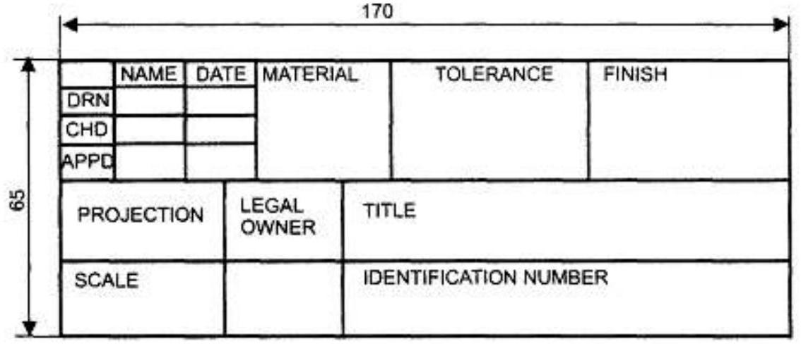
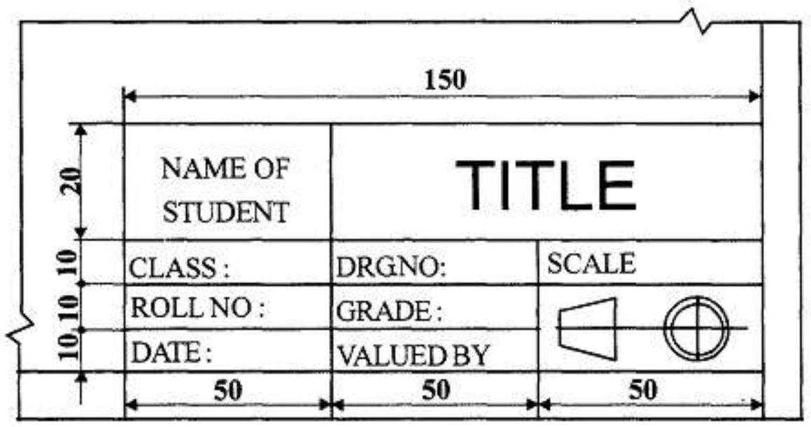
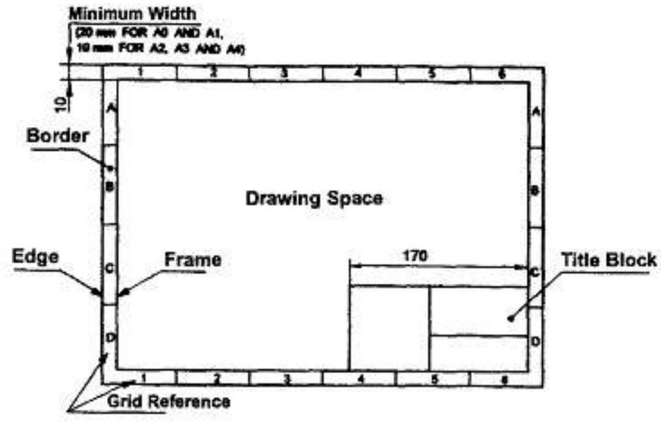
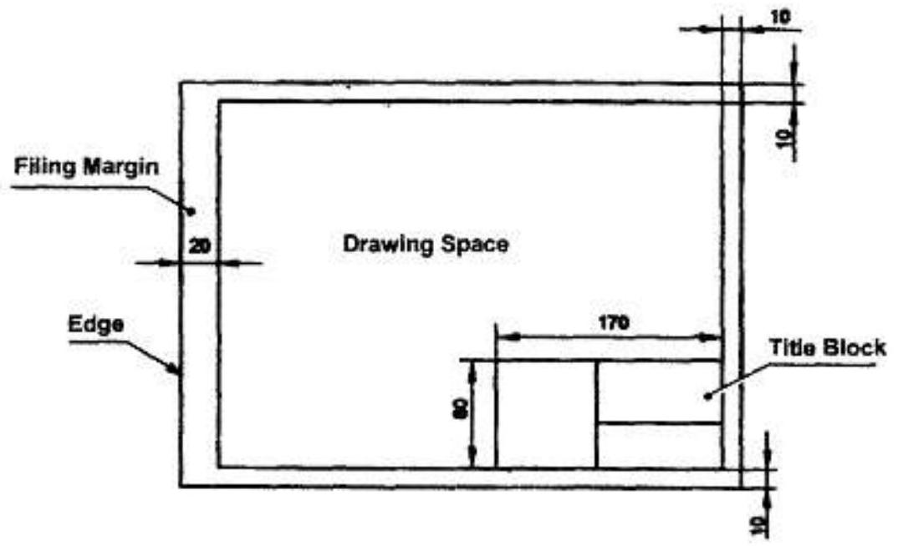
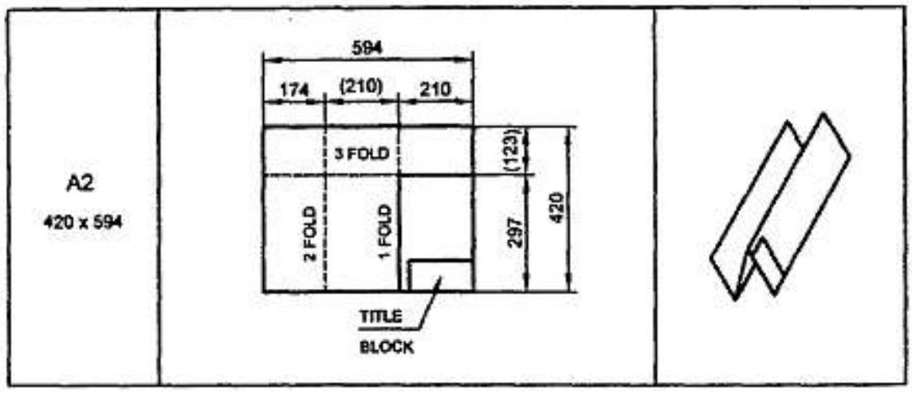
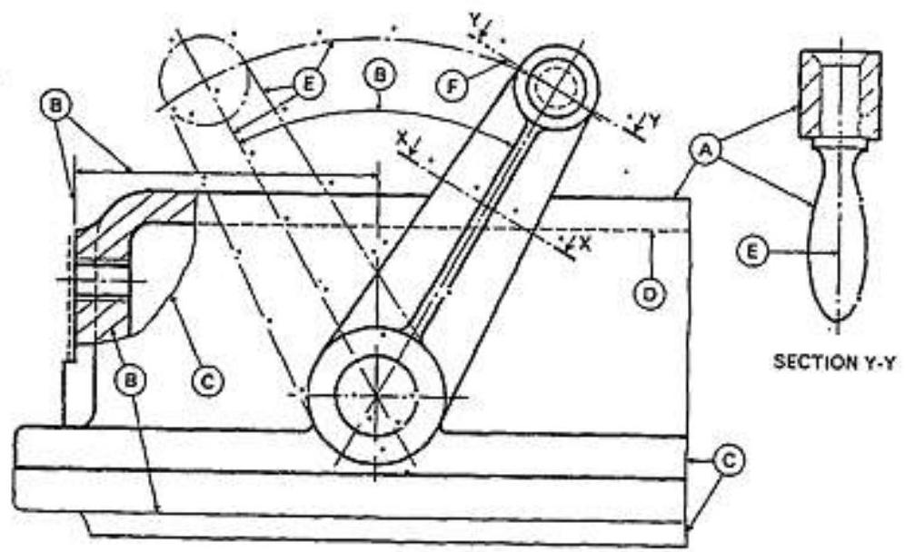
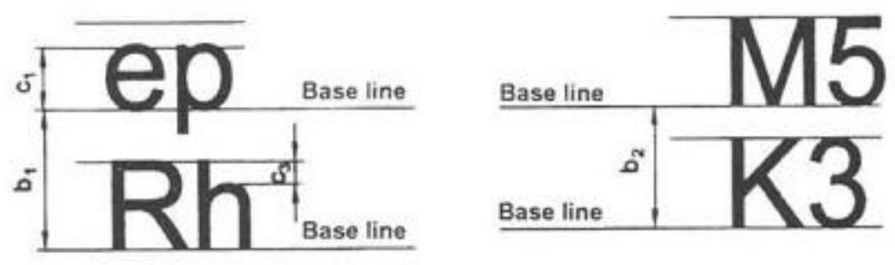
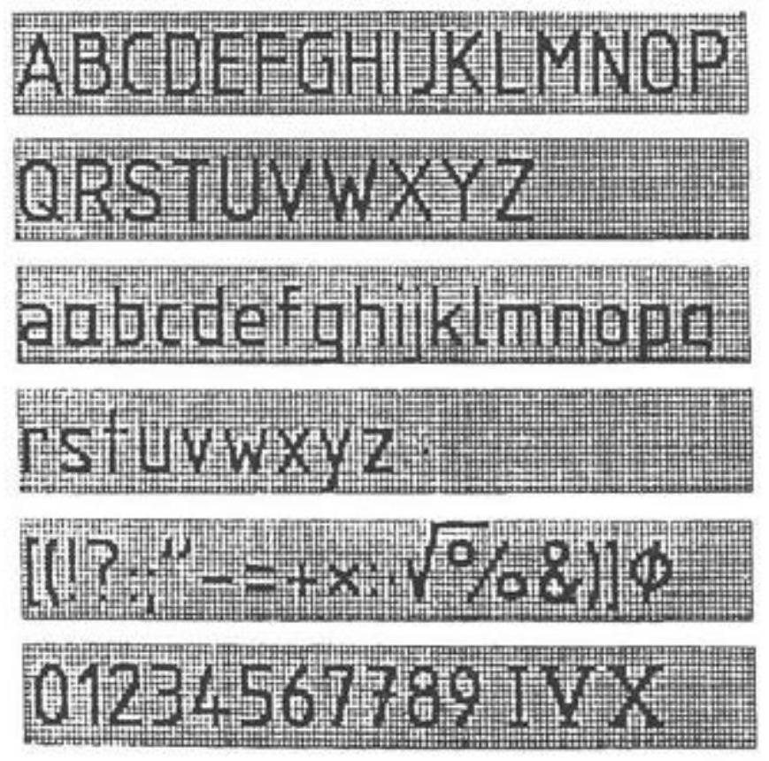
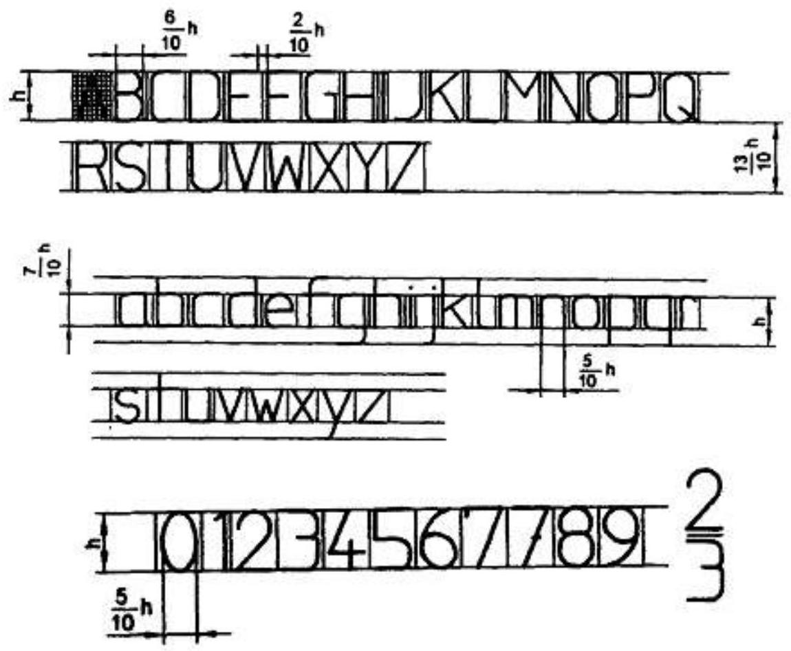
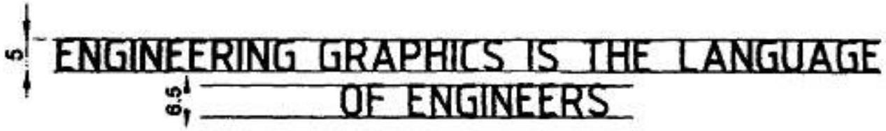

MPE 161 NOTES:
Lettering and Linework
2.1 Introduction
Engineering drawings are prepared on standard size drawing sheets. The correct shape and size of the object can be visualised from the understanding of not only its views but also from the various types of lines used, dimensions, notes, scale etc. For uniformity, the drawings must be drawn as per certain standard practice. This chapter deals with the drawing practices as recommended by Bureau of Indian Standards (BIS) SP: 46:2003. These are adapted from what is followed by International Standards Organisation (ISO).
2.2 Drawing Sheet
The standard drawing sheet sizes are arrived at on the basic Principal of $x: y=1$ : sqrt of 2 and $x y=1$ where $x$ and $y$ are the sides of the sheet. For example A0, having a surface area of 1 Sq. $\mathrm{m}$; $x=841 \mathrm{~mm}$ and $y=1189 \mathrm{~mm}$. The successive sizes are obtained by either by halving along the length or doubling the width, the area being in the ratio 1: 2. Designation of sizes is given in Fig.2.l and their sizes are given in Table 2.1. For class work use of A2 size drawing sheet is preferred.
| Designation | Dimension, mm Trimmed size |
|---|---|
| A0 | $841 \times 1189$ |
| A1 | $594 \times 841$ |
| A2 | $420 \times 594$ |
| A3 | $297 \times 420$ |
| A4 | $210 \times 297$ |
Fig. 2.1 Drawing Sheet Formats
2.2.1 Title Block
The title block should lie within the drawing space at the bottom right hand comer of the sheet. The title block can have a maximum length of 170 mm providing the following information.
- Title of the drawing.
- Drawing number.
- Scale.
- Symbol denoting the method of projection.
- Name of the firm, and
- Initials of staff who have designed, checked and approved.
The title block used on shop floor and one suggested for students class work are shown in Fig.2.2.
Fig. 2.2(a)
Fig. 2.2(b)
2.2.2 Drawing Sheet Layout (Is 10711: 2001)
The layout of a drawing sheet used on the shop floor is shown in Fig.2.3a, The layout suggested to students is shown in Fig.2.3b.
Fig. 2.2 (a) General features of a drawing sheet
Fig. 2.3 (b) Layout of sheet for class work
2.2.3 Folding of Drawing Sheets
IS: 11664-1999 specifies the method of folding drawing sheets. Two methods of folding of drawing sheets, one suitable for filing or binding and the other method for keeping in filing cabinets are specified by BIS. In both the methods of folding, the Title Block is always visible.
Fig.2.4. Shows the method in which drawing sheets may be unfolded and refolded, without the necessity of removal from the file.
| Sheet Designation | Folding Diagram | Lengthwise Folding |
|---|---|---|
| A2 $420 \times 594$ |  |  |
Fig. 2.4(a) Folding of drawing sheet for filing or binding
Fig. 2.4(b) Folding of drawing sheet for storing in filing cabinet
2.2.4 Lines (IS 10714 (part 20): 2001 and SP 46: 2003)
Just as in English textbook the correct words are used for making correct sentences; in Engineering Graphics, the details of various objects are drawn by different types of lines. Each line has a definite meaning and sense to convey.
IS 10714 (Pint 20): 2001 (General principles of presentation on technical drawings) and SP 46:2003 specify the following types of lines and their applications:
- Visible Outlines, Visible Edges: Type 01.2 (Continuous wide lines) The lines drawn to represent the visible outlines/ visible edges / surface boundary lines of objects should be outstanding in appearance.
- Dimension Lines: Type 01.1 (Continuous narrow Lines) Dimension Lines are drawn to mark dimension.
- Extension Lines: Type 01.1 (Continuous narrow Lines) They are extended slightly beyond the respective dimension lines.
- Construction Lines: Type 01.1 (Continuous narrow Lines) Construction Lines are drawn for constructing drawings and should not be erased after completion of the drawing.
MPE 161 NOTES: Introduction to engineering drawing
- Hatching / Section Lines: Type 01.1 (Continuous Narrow Lines) Hatching Lines are drawn for the sectioned portion of an object. These are drawn inclined at an angle of $45^{\circ}$ to the axis or to the main outline of the section.
- Guide Lines: Type 01.1 (Continuous Narrow Lines) Guide Lines are drawn for lettering and should not be erased after lettering.
- Break Lines: Type 01.1 (Continuous Narrow Freehand Lines) Wavy continuous narrow line drawn freehand is used to represent break of an object.
- Break Lines: Type 01.1 (Continuous Narrow Lines with Zigzags) Straight continuous arrow line with zigzags is used to represent break of an object.
- Dashed Narrow Lines: Type 02.1 (Dashed Narrow Lines) Hidden edges / Hidden outlines of objects are shown by dashed lines of short dashes of equal lengths of about 3 mm , spaced at equal distances of about 1 mm . the points of intersection of these lines with the outlines / another hidden line should be clearly shown.
- Center Lines: Type 04.1 (Long-Dashed Dotted Narrow Lines) Center Lines are drawn at the center of the drawings symmetrical about an axis or both the axes. These are extended by a short distance beyond the outline of the drawing.
- Cutting Plane Lines: Type 04.1 and Type 04.2 Cutting Plane Line is drawn to show the location of a cutting plane. It is long-dashed dotted narrow line, made wide at the ends, bends and change of direction. The direction of viewing is shown by means of arrows resting on the cutting plane line.
- Border Lines: Border Lines are continuous wide lines of minimum thickness 0.7 mm
Understanding the various types of lines used in drawing (i.e.,) their thickness, style of construction and appearance as per BIS and following them meticulously may be considered as the foundation of good drawing skills. Table 2.2 shows various types of lines with the recommended applications.
Fig. 2.5 Types of Lines
| No. | Line description and Representation | Applications |
|---|---|---|
| 01.1 | Continuous narrow line | Dimension lines, Extension lines |
| Leader lines. Reference lines | ||
| Short centre lines | ||
| Projection lincs | ||
| Hatching | ||
| Construction lines, Guide lines | ||
| Outlines of revolved sections | ||
| Imaginary lines of intersection | ||
| 01.1 | Continuous narrow freehand | Preferably manually represented termination of partal or interrupted views, cuts and sections, if the limit is not a line of symmetry or a center line ${}^{4}$. |
| 01.1 | Continuous narrow line with zigzags | Preferably mechanically represented termination of partial or interrupted vews, cuts and sections, if the limit is not a line of symmetry or a center line ${}^{2}$. |
| 01.2 | Continuous wide line | Visible edges, visible outlines |
| Main representations in diagrams, maps. flow charts | ||
| 02.1 | Dashed nartow line D — . . . . . - | Hidden edges |
| Hidden outlines | ||
| 04.1 | Long-dashed dotted narrow E line | Center lines / Axes. Lines of symmetry |
| Cutting planes (Line 04.2 at ends and changes of direction) | ||
| 04.2 | Long-dashed dotted wide line F | Cutting planes at the ends and changes of direction outlines of visible parts situated in front of cutting plane |
Line widths (IS 10714 : 2001)
Line width means line thickness.
Choose line widths according to the size of the drawing from the following range: $0.13,0.18,0.25,0.35$, $0.5,0.7$ and 1 mm .
BIS recommends two line widths on a drawing. Ratio between the thin and thick lines on a drawing shall not be less than 1: 2.
Precedence of Lines
- When a Visible Line coincide with a Hidden Line or Center Line, draw the Visible Line. Also, extend the Center Line beyond the outlines of the view.
- When a Hidden Line coincides with a Center Line, draw the Hidden Line.
- When a Visible Line coincides with a Cutting Plane, draw the Visible Line.
- When a Center line coincides with a Cutting Plane, draw the Center Line and show the Cutting Plane line outside the outlines of the view at the ends of the Center Line by thick dashes.
2.3 LETTERING [IS 9609 (PART 0) : 2001 AND SP 46 : 2003]
Lettering is defined as writing of titles, sub-titles, dimensions, etc., on a drawing.
2.3.1 Importance of Lettering
To undertake production work of an engineering components as per the drawing, the size and other details are indicated on the drawing. This is done in the form of notes and dimensions. Main Features of Lettering are legibility, uniformity and rapidity of execution. Use of drawing instruments for lettering consumes more time. Lettering should be done freehand with speed. Practice accompanied by continuous efforts would improve the lettering skill and style. Poor lettering mars the appearance of an otherwise good drawing.
BIS and ISO Conventions
IS 9609 (Part 0): 2001 and SP 46: 2003 (Lettering for technical drawings) specify lettering in technical product documentation. This BIS standard is based on ISO 3098-0: 1997.
2.3.2 Single Stroke Letters
The word single-stroke should not be taken to mean that the lettering should be made in one stroke without lifting the pencil. It means that the thickness of the letter should be uniform as if it is obtained in one stroke of the pencil.
MPE 161 NOTES: Introduction to engineering drawing
2.3.3 Types of Single Stroke Letters
- Lettering Type A: (i) Vertical and (ii) Sloped (at $75^{\circ}$ to the horizontal)
- Lettering Type B: (i) Vertical and (ii) Sloped (at $75^{\circ}$ to the horizontal)
Type B Preferred
In Type A, height of the capital letter is divided into 14 equal parts, while in Type $B$, height of the capital letter is divided into 10 equal parts. Type $B$ is preferred for easy and fast execution, because of the division of height into 10 equal parts.
Vertical Letters Preferred
Vertical letters are preferred for easy and fast execution, instead of sloped letters.
2.3.4 Size of Letters
- Size of Letters is measured by the height $h$ of the CAPITAL letters as well as numerals.
-
Standard heights for CAPITAL letters and numerals recommended by BIS are given below:
$1.8,2.5,3.5,5,6,10,14$ and 20 mm
Guide Lines
In order to obtain correct and uniform height of letters and numerals, guide lines are drawn, using 2 H pencil with light pressure. HB grade conical end pencil is used for lettering.
2.3.5 Procedure for Lettering
- Thin horizontal guide lines are drawn first at a distance '$h$' apart.
- Lettering Technique: Horizontal lines of the letters are drawn from left to right. Vertical, inclined and curved lines are drawn from top to bottom.
- After lettering has been completed, the guidelines are not erased.
MPE 161 NOTES: Introduction to engineering drawing
2.3.6 Dimensioning of Type B Letters (Figs 2.5 and 2.6)
Fig. 2.6
BIS denotes the characteristics of lettering as:
$h$ (height of capita) letters),
$c_{1}$ (height of lower-case letters),
$c_{2}$ (tail of lower-case letters),
c3 (stem of lower-case letters),
$a$ (spacing between characters),
$b_{1} \& b_{2}$ (spacing between baselines),
$e$ (spacing between words) and
$d$ (line thickness)
| Recommended Size (height h) of Letters / Numerals | |
|---|---|
| Main Title | $5 \mathrm{~mm}, 7 \mathrm{~mm}, 10 \mathrm{~mm}$ |
| Sub-Titles | $3.5 \mathrm{~mm}, 5 \mathrm{~mm}$ |
| Dimensions, Notes, etc. | $2.5 \mathrm{~mm}, 3.5 \mathrm{~mm}, 5 \mathrm{~mm}$ |
2.3.7 Lettering practice
Practice of lettering capital and lower case letters and numerals of type $B$ are shown in Figs.2.7 and 2.8.
Fig. 2.7 Lettering
Fig. 2.8 Vertical Lettering
The following are some of the guide lines for lettering (Fig 2.9 & 2.10)
- Drawing numbers, title block and letters denoting cutting planes, sections are written in 10 mm size.
- Drawing title is written in 7 mm size.
- Hatching, sub-titles, materials, dimensions, notes, etc., are written in 3.5 mm size.
- Space between lines $=3/4 \mathrm{~h}$.
- Space between words may be equal to the width of alphabet M or $3/5 \mathrm{~h}$.
- Space between letters should be approximately equal to $1/5 \mathrm{~h}$. Poor spacing will affect the visual effect.
- The spacing between two characters may be reduced by half if it is gives a better visual effect, as for example LA, TV; over lapped in case of say LT, TA etc, and the space is increased for letters with adjoining stems.
MPE 161 NOTES: Introduction to engineering drawing
CAPITAL Letters
- Ratio of height to width for most of the CAPITAL letters is approximately $=10: 6$
- However, for M and W , the ratio $=10: 8$ for I the ratio $=10: 2$
Lower-case Letters
- Height of lower-case letters with stem/tail (b, d, f, g, h, j, k, l, p, q, t, y) $=C_{2}=c_{3}=h$
- Ratio of height to width for lower-case letters with stem or tail $=10: 5$
- Height of lower-case letters without stem or tail $\mathrm{c}_{1}$ is approximately $=(7 / 10) \mathrm{h}$
- Ratio of height to width for most lower-case letters without stem or tail $=7: 5$
- However, for m and w, the ratio $=7: 7$. For I and 1, the ratio $=10: 2$
Fig. 2.9 Inclined Lettering
Numerals
- For numerals 0 to 9, the ratio of height to width $=10: 5$. For I , ratio $=10: 2$
Spacing
- Spacing between characters $=a=(2 / 10) \mathrm{h}$
- Spacing between words $=e=(6 / 10) \mathrm{h}$
Fig. 2.10 Guide lines for lettering
Fig. 2.11 Vertical capital & Lowercase letters and numerals of type B
EXAMPLE IN LETTERING PRACTICE
Write freehand the following, using single stroke vertical CAPITAL letters of $5 \mathrm{~mm}(\mathrm{~h})$ size
Fig. 2.12